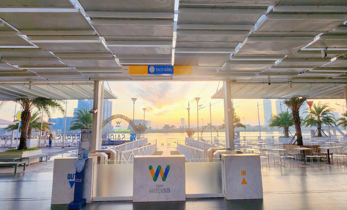
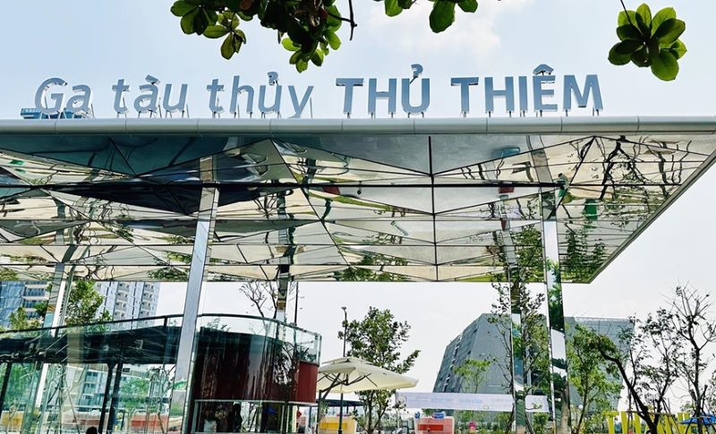
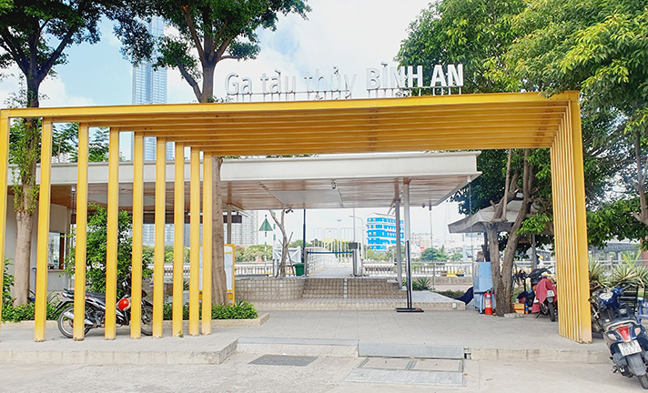
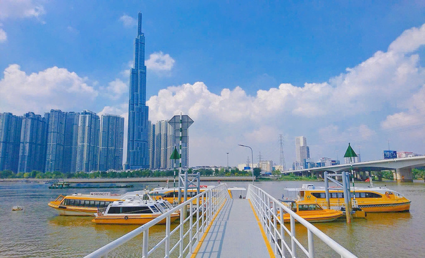
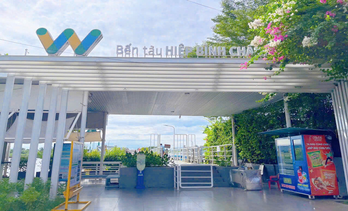
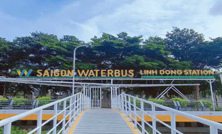

Bến tàu Bạch Đằng - Nơi giao thoa lịch sử và hiện đại
Tọa lạc ngay trung tâm Thành phố (Q1) với công viên Bạch Đằng, phố đi bộ Nguyễn Huệ
cùng nhiều địa điểm vui chơi, ăn uống khác đang chờ bạn.
Xem chi tiết và chỉ đường

Bến tàu Thủ Thiêm - Sự kết hợp giữa cảnh quan hiện đại và lịch sử
Bến tàu được cải tạo lại với sự kết hợp giữa cảnh quan hiện đại và lịch sử,
tạo điểm đến cho người dân, du khách tham quan, ngắm cảnh, chờ tàu
Xem chi tiết và chỉ đường

Bến tàu Bình An - Ngắm nhìn thành phố đổi mới
Kết nối 2 thành phố: TP. Thủ Đức - TP. HCM. Đây là nơi ngắm tòa nhà Landmark 81,
kết nối Vinhome Central Park, Tân Cảng, Chợ Thảo Điền và các điểm đến khác.
Xem chi tiết và chỉ đường

Bến tàu Thanh Đa - Nhịp sống bình yên giữa lòng đô thị
Bán đảo Thanh Đa xanh mát, yên bình giữa lòng thành phố nhộn nhịp, sôi động.
Dừng chân tại đây, đừng quên thưởng thức Cháo Vịt Thanh Đa trứ danh, Phong Cua
hay dạo chơi KDL Bình Quới.
Xem chi tiết và chỉ đường

Bến tàu Hiệp Bình Chánh - Điểm hẹn của người Sài Gòn
Đúng với biệt danh “điểm hẹn của người Sài Gòn” Xung quanh ga tàu thủy
Hiệp Bình Chánh rất nhiều nhà hàng, dịch vụ vui chơi ăn uống mà tiêu biểu là Giga Mall.
Xem chi tiết và chỉ đường

Bến tàu Linh Đông - Vi vu làng du lịch Bình Quới
ại đây bạn sẽ cảm nhận cảm giác thanh mát mộc mạc của làng quê yên bình.
Đặc biệt, cạnh Ga tàu thủy Linh Đông có bến đò Bình Qưới để sang KDL Bình Quới 2.
Xem chi tiết và chỉ đường